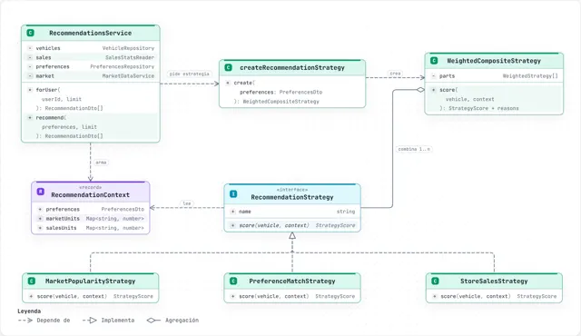
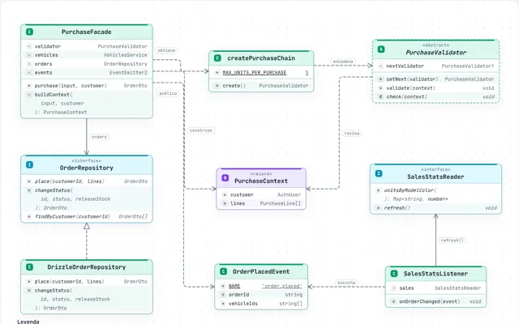
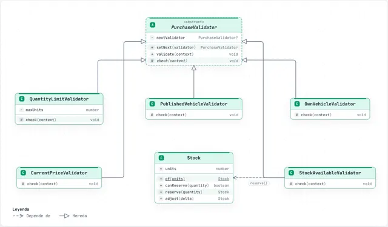
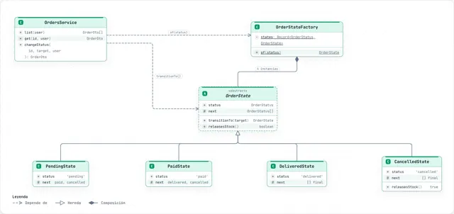
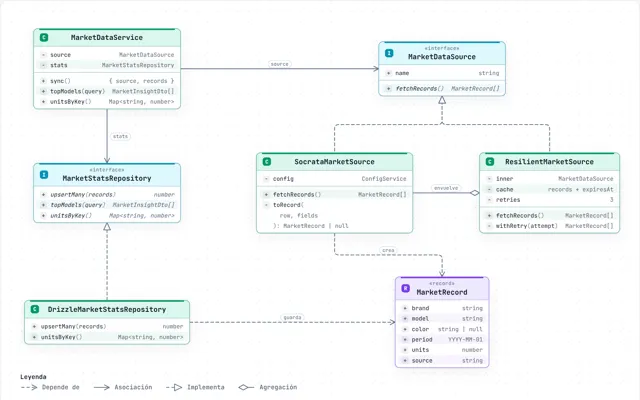
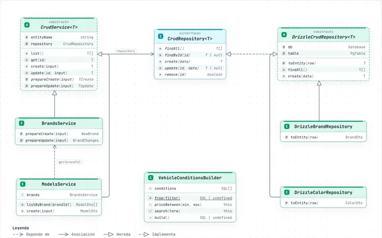
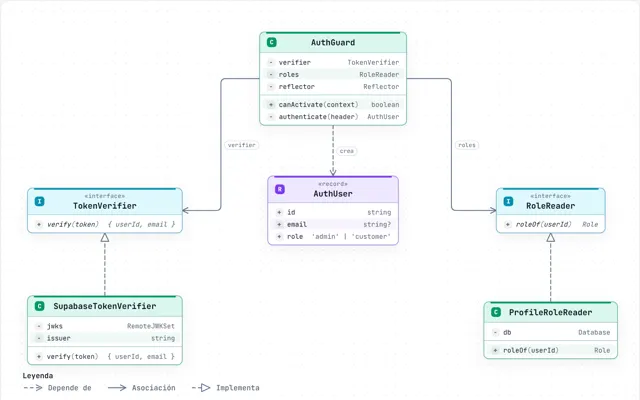

Diagramas de Rueda
Generados con Archify a partir del código. Haz clic en un diagrama para abrirlo: puedes acercarte, tocar cada elemento para ver su explicación y los archivos que lo implementan, cambiar de tema y exportarlo.
Arquitectura
Clases y patrones de diseño

RecomendacionesStrategy, Composite y Factory Method.
CompraFacade, Chain of Responsibility, Unit of Work y Observer.
Reglas de compraCadena de validadores y el Value Object Stock.
Estados del pedidoPatrón State: transiciones permitidas y liberación de stock.
Datos de mercadoAdapter de Socrata y Decorator con reintentos y caché.
CatálogoTemplate Method, Repository genérico y Builder.
Autenticación y rolesPorts & Adapters con inyección de dependencias.